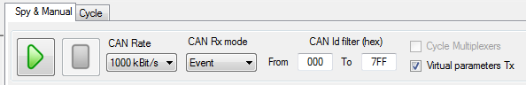
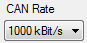

The ‘Spy & Manual' mode is intended to be used to spy the content of frames (or messages) circulating on the bus.
Using this mode, it also possible to send messages containing values set by the user.
Both reception and transmission handle ‘Engineering' and ‘Raw' formats of data. ‘Engineering' means that user can read and write actual physical values of CAN signals while the ‘Raw' format means raw byte values of the CAN messages.
The ‘Spy & Manual' mode is controlled through the tool bar of the ‘Spy & Manual' panel.

This tool bar contains the following elements.
 Start button: Start data transmission and reception.
Start button: Start data transmission and reception.
Stop button: Stop data transmission and reception.
 CAN rate selection: Allows definition of the CAN communication speed.
 Rx mode selection: Allows selection of the message reception mode (event, manual, periodic).
Rx mode selection: Allows selection of the message reception mode (event, manual, periodic).
 Rx IDs filter: Allows the definition of the range of CAN message IDs that have to be considered in the reception panel.
Rx IDs filter: Allows the definition of the range of CAN message IDs that have to be considered in the reception panel.
Virtual parameters transmission enabled flag: Enable and disable the transmission of virtual CAN signals.
 Multiplexer auto-cycling flag: If the CAN configuration in use contains some multiplexed message, CANStream will automatically cycle the multiplexer value for data transmission.
Multiplexer auto-cycling flag: If the CAN configuration in use contains some multiplexed message, CANStream will automatically cycle the multiplexer value for data transmission.
Created with the Personal Edition of HelpNDoc: Full-featured Help generator